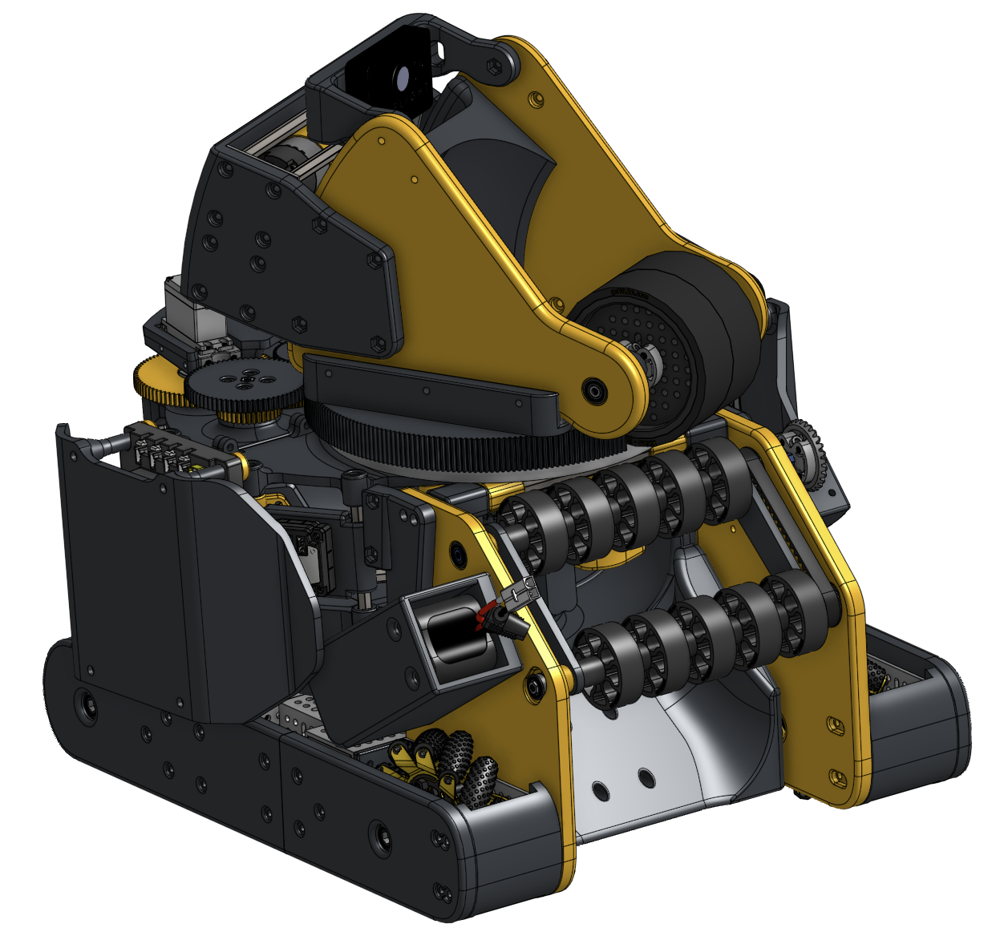
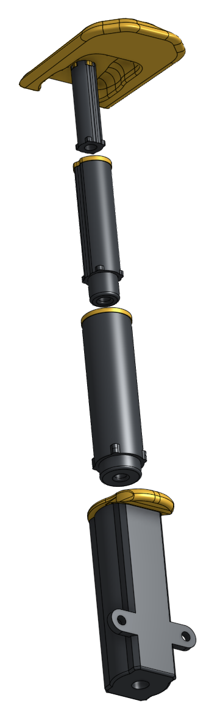

2026 · FTC
FTC robot, 70% 3D-printed
A lightweight competition robot combining printed structure, automatic goal tracking, a turret, and an artifact sorter.

Build overview
The robot uses printed structure where fast iteration matters, while keeping the load-bearing and wear surfaces easy to replace. The result is a chassis that can change overnight without turning every revision into a machining project.
This is where you can add the season goal, your role on the team, software details, and a short explanation of what changed between versions.
Gallery




Design notes
Components and architecture
Add the motors, servos, sensors, control hub, printed materials, and mechanisms used in the final robot.
Design decisions
Explain where 3D printing helped iteration, where it introduced constraints, and how you balanced weight, stiffness, serviceability, and match reliability.
Testing and next iteration
Add cycle times, driver feedback, failure modes, and the next improvement you would make.